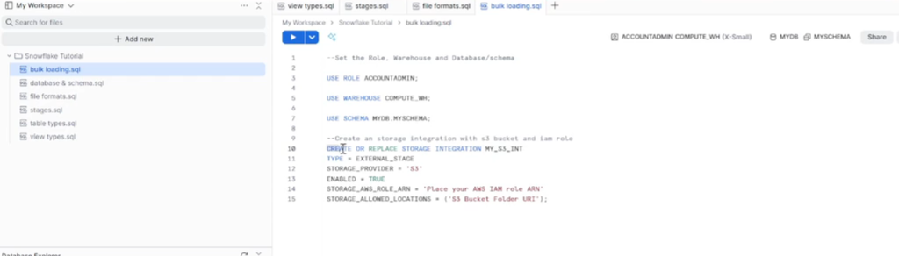

🔗 AWS S3 → Snowflake Setup
Complete Step-by-Step Integration Guide
Example:
my-company-snowflake-data-2024
us-east-1)
Example:
sales-data or employee-data
0000)Note: We'll update this later with Snowflake's actual External ID
Example:
snowflake-s3-access-role
Example ARN:
arn:aws:iam::123456789012:role/snowflake-s3-access-role
You will paste this ARN into Snowflake in Step 9 when creating the Storage Integration.
Keep this ARN handy - it's the key that connects AWS to Snowflake!
Open Snowflake and run these commands to set your working environment:
Before creating the Storage Integration, let's get the exact S3 URI from AWS:
my-company-snowflake-data-2024)
sales-data)
This will copy something like:
s3://my-company-snowflake-data-2024/sales-data/
You'll paste this URI into Snowflake in the next step when creating the Storage Integration.
Make sure it ends with a trailing slash (/)!
Now go back to Snowflake and create the "bridge" between Snowflake and AWS:
1. Replace
arn:aws:iam::123456789012:role/snowflake-s3-access-role with the
ARN you copied from AWS in Step 72. Replace
s3://my-company-snowflake-data-2024/sales-data/ with the
S3 URI you copied from AWS in Step 9
• The ARN tells Snowflake which AWS role to use
• The S3 URI tells Snowflake where your data lives
• You can list multiple allowed locations if needed
After creating the Storage Integration, Snowflake generates credentials that AWS needs to trust:
This will display a results table with multiple properties. Look at the property_value column:

In the property_value column (highlighted in yellow), copy the entire ARN
Example:
arn:aws:iam::BD5455449489:user/izpf31000-s
In the property_value column (highlighted in yellow), copy the entire External ID
Example:
VI79878_SFCRole=2_l8FbSWjCa
You'll paste these into AWS in the next step to establish the trust relationship between AWS and Snowflake.
Now we'll update the AWS IAM role to trust Snowflake's specific credentials:
snowflake-s3-access-role)

"AWS":
field (highlighted in blue)Replace
"arn:aws:iam::294845879996:root" with the
STORAGE_AWS_IAM_USER_ARN you copied from Snowflake in Step 11
"sts:ExternalId": fieldRemove
"0000" and replace it with the STORAGE_AWS_EXTERNAL_ID you
copied from Snowflake in Step 11
Line 7 - AWS ARN: Paste the IAM User ARN from Snowflake's property_value
Line 12 - External ID: Paste the External ID from Snowflake's property_value
This establishes the trust relationship between AWS and Snowflake!
Before loading data, define how Snowflake should read your CSV files:
•
TYPE = 'CSV' - Specifies CSV file type•
FIELD_DELIMITER = ',' - Comma-separated values•
SKIP_HEADER = 1 - Skip the first row (column names)•
FIELD_OPTIONALLY_ENCLOSED_BY = '"' - Handle quoted fields•
TRIM_SPACE = TRUE - Remove leading/trailing spaces
If your CSV uses different delimiters (like pipes
| or tabs), change the
FIELD_DELIMITER accordingly.
The stage connects your S3 bucket to Snowflake using the Storage Integration and File Format you created:

Scroll back to Step 10 where you created the Storage Integration
Look at the
STORAGE_ALLOWED_LOCATIONS value (highlighted in yellow in the image
above)Example:
's3://dea-snowflake-data-bucket/bulk-data/'
Reference
MY_CSV_FORMAT that you created earlier
• URL: Must match the
STORAGE_ALLOWED_LOCATIONS from Step 10• STORAGE_INTEGRATION: Use
MY_S3_INT (created in Step 10)• FILE_FORMAT: Use
MY_CSV_FORMAT (created in Step 13)
The stage acts as a named pointer to your S3 location. Instead of typing the S3 path every time you load data, you can just reference
@MY_S3_STAGE. The file format tells Snowflake
how to parse the files automatically!
Verify that Snowflake can successfully access your S3 bucket:

• If S3 bucket is empty: "Query produced no results" (as shown above) - This is GOOD! ✓
• If S3 has files: You'll see a list of files with their names, sizes, and timestamps
Either result means your integration is working perfectly! The command ran without errors, which confirms AWS and Snowflake are properly connected.
• ARN mismatch in trust policy - Double-check Step 12, Line 7
• External ID not updated - Double-check Step 12, Line 12
• S3 bucket path typo - Verify URL in Step 14 matches Step 10
• IAM role permissions missing - Ensure AmazonS3FullAccess is attached in Step 6
Now let's upload data files and verify Snowflake can see them:
📤 Part A: Upload Files to S3
Example:
my-company-snowflake-data-2024/sales-data/
🔍 Part B: Verify Files Appear in Snowflake
Instead of "Query produced no results", you should now see a table listing your uploaded files with columns like:
• name - File path in S3
• size - File size in bytes
• md5 - File checksum
• last_modified - Upload timestamp
This confirms Snowflake can see the files in your S3 bucket! 🎉
📥 Part C: Create Table & Load Data

Replace the column names and data types to match your CSV file structure. Common data types:
•
INT - Whole numbers•
STRING - Text values•
DATE - Date values•
DECIMAL(10,2) - Numbers with decimals•
BOOLEAN - True/False values
• Snowflake read the files from S3 using the stage
• Parsed them using the CSV file format we defined
• Loaded the data into your table
• You should see output like: "Number of rows loaded: X"

1. Look at the left sidebar under Database Explorer
2. Expand MYDB → MYSCHEMA → Tables
3. You should see your USER table listed (as shown in the image above)
4. This confirms the table was successfully created!

You should now see the contents of your CSV file displayed in the results table (as shown above).
This confirms that:
✅ Files were successfully uploaded to S3
✅ Snowflake can access your S3 bucket via the stage
✅ The file format correctly parsed your CSV
✅ Data was loaded into your Snowflake table
Congratulations! Your AWS S3 → Snowflake integration is complete! 🚀
Snowpipe enables continuous, automatic data loading. Instead of manually running COPY INTO commands, Snowpipe automatically loads data as soon as new files arrive in S3.
Bulk Loading (COPY INTO) = You decide when to load (scheduled)
Snowpipe = Files trigger automatic loading (event-driven)

• Named Object: Contains a COPY statement used by Snowpipe
• Source Stage: Where data files land (Internal or External)
• Target Table: Destination for loaded data
• Ingestion Queue: Loads data continuously from queue
• REST Endpoint: Trigger via API or S3 Event Notification
• Snowflake-provided Compute: Serverless, no warehouse needed
💡 Best Practice: Size files between 10MB and 100MB (compressed) for optimal Snowpipe performance
Before creating Snowpipe, set up the AWS infrastructure for continuous data ingestion:
📁 Part A: Create S3 Folder for Real-Time Data
Example:
dea-snowflake-data-bucket
event-data) and click
"Create folder"
🔐 Part B: Create IAM Role for Snowpipe
0000)
- we'll update this later
mysnowpiperole)

Example:
arn:aws:iam::294845879996:role/mysnowpiperole
❄️ Part C: Create Storage Integration in Snowflake
continuous_loading.sql file:

• Replace
[Place your AWS IAM role ARN] with the ARN you copied in step n• We'll replace
[S3 Bucket Folder URI] in the next part
🔗 Part D: Get S3 Bucket Folder URI
event-data)

STORAGE_ALLOWED_LOCATIONS parameter

Your storage integration now has both the IAM role ARN and S3 bucket folder URI configured. Execute this CREATE STORAGE INTEGRATION command before proceeding to the next step.
First, create a new SQL file to organize your Snowpipe queries:

Creating separate SQL files helps organize your code:
•
bulk_loading.sql - For COPY INTO commands (Steps 1-16)•
continuous_loading.sql - For Snowpipe setup (Steps 17-20)
continuous_loading.sql file, start by
setting the context (role, warehouse, schema):

•
USE ROLE ACCOUNTADMIN - Sets the role with permissions to create pipes•
USE WAREHOUSE COMPUTE_WH - Sets the warehouse (for metadata operations only)•
USE SCHEMA MYDB.MYSCHEMA - Sets the database and schema contextNote: Replace these with your actual role, warehouse, and schema names if different.

"Integration MY_SNOWPIPE_INT successfully created."
Now your Snowflake environment is linked to your S3 folder via the IAM role!
Now authorize Snowflake to access your AWS role by updating the trust policy:

STORAGE_AWS_IAM_USER_ARN to copy the full ARN.
STORAGE_AWS_EXTERNAL_ID row and click its property value to copy it.


0000 placeholder in "sts:ExternalId" with the External ID you copied
from Snowflake:

Now your AWS Role
mysnowpiperole specifically trusts this new
MY_SNOWPIPE_INT integration.
Now we prepare Snowflake to handle JSON data by creating a File Format and a Stage:
continuous_loading.sql to define how to read your JSON
files:

First, get the S3 URI for your event-data folder. You can go to the AWS S3
Console and click "Copy S3 URI":

URL field below.
Tip: You can also just copy the URI from the
STORAGE_ALLOWED_LOCATIONS line
in the integration command above!
VARIANT
column to store it raw.

The Stage acts as the bridge, using the Integration for security and the File Format for data parsing.

Create the pipe that will automatically load data from your new stage:
continuous_loading.sql file.
Creating separate SQL files helps organize your code:
•
bulk_loading.sql - For COPY INTO commands (Steps 1-16)•
continuous_loading.sql - For Snowpipe setup (Steps 17-23)
continuous_loading.sql file, start by
setting the context (role, warehouse, schema):
AUTO_INGEST = TRUE so Snowflake knows to
listen for S3 events.

This critical setting tells Snowflake to automatically ingest data as soon as it lands in your S3 folder. Instead of you running
COPY INTO manually, Snowflake uses an SQS queue to get
notified by S3 instantly.
It enables near real-time data loading!

Snowpipe creates an SQS queue to receive S3 event notifications. You need to get this queue's ARN to tell S3 where to send events.
This contains the ARN of the SQS queue (e.g.,
arn:aws:sqs:us-east-1:12345:sf-snowpipe-...).

Now configure your S3 bucket to automatically send a notification to that SQS queue whenever a new file arrives:
dea-snowflake-data-bucket).
snowpipe-event-trigger.
event-data/. (This ensures only files in this folder trigger the pipe).
- ✅
Put - ✅
Post - ✅
Copy - ✅
Multipart upload completed
Your pipeline is live! Any file dropped into
event-data/ will trigger a
notification to the SQS queue, which Snowpipe will read to auto-ingest the data into your
EVENT table.
Now for the magic moment! We will upload a file to S3 and watch it automatically appear in Snowflake.
event-data/ folder and click the orange
"Upload" button.

event_1.json, event_2.json) at once to simulate a stream of data.


As soon as the files land in the folder:
1. S3 sends a separate Event Notification for each file to your SQS queue.
2. Snowpipe is listening to that queue and receives the message "New file available!"
3. Snowpipe automatically wakes up and loads the data into your EVENT table.
No manual commands required!
• No data? Run:
SELECT SYSTEM$PIPE_STATUS('MY_EVENT_PIPE');• Status says "Execution State: PAUSED"? Run:
ALTER PIPE MY_EVENT_PIPE REFRESH;• Still nothing? Double-check your SQS ARN in S3 and ensure you selected the correct event types (Put, Post, Copy).
Use Bulk Loading (COPY INTO) when:
• You have scheduled data loads (hourly, daily)
• You need transaction control (BEGIN/COMMIT/ROLLBACK)
• You want to use your own warehouse for compute
• Loading historical/one-time data migrations
Use Snowpipe when:
• You need real-time/near real-time data (seconds to minutes)
• Data arrives continuously (IoT, logs, clickstreams)
• You want event-driven, hands-off automation
• You prefer serverless compute (Snowflake-managed)